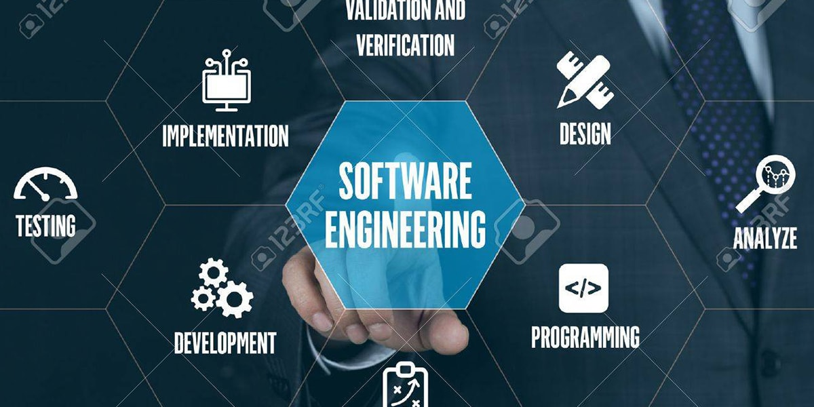
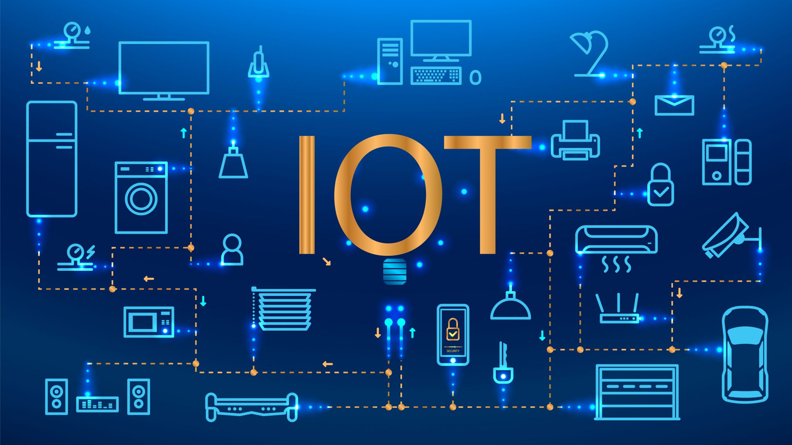
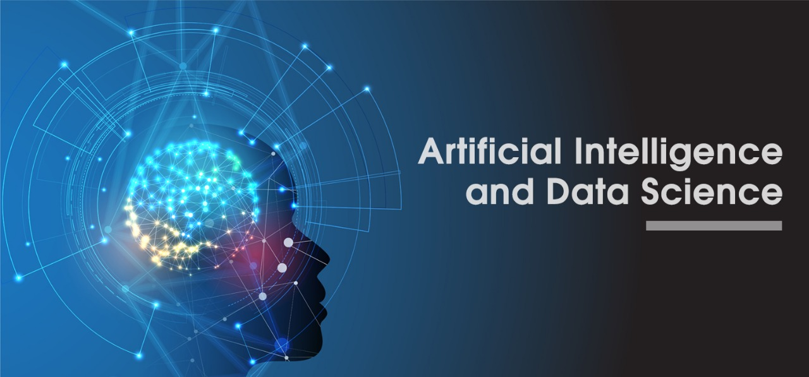

Topik Utama: Informatika

Informatika merupakan disiplin ilmu yang berfokus pada pengolahan data dan informasi menggunakan sistem komputasi. Di era Revolusi Industri 4.0 saat ini, Informatika bukan sekadar mempelajari komputer secara fisik, melainkan menjadi tulang punggung bagi inovasi teknologi di berbagai sektor kehidupan, mulai dari bisnis digital, kesehatan, hingga pendidikan.
Memahami ilmu Informatika berarti mempelajari bagaimana merancang, mengembangkan, dan memelihara sistem yang kompleks. Melalui pemrograman, algoritma, dan struktur data, seorang ahli informatika menciptakan solusi berupa perangkat lunak yang dapat mempermudah pekerjaan manusia, mengotomatisasi proses, dan memecahkan masalah berskala besar secara efisien.
Fokus Utama dalam Informatika:
-
Software Engineering (Rekayasa Perangkat Lunak):
Proses sistematis dalam merancang, mengembangkan, menguji, dan memelihara perangkat lunak
yang andal, baik itu berupa aplikasi web, mobile, maupun perangkat lunak desktop tingkat
perusahaan (enterprise).

-
Internet of Things (IoT):
Mengembangkan dan mengintegrasikan perangkat fisik ke dalam jaringan internet sehingga dapat
mengumpulkan, mengirim, dan bertukar data. Hal ini menciptakan ekosistem pintar seperti
Smart Home, Smart City, dan berbagai teknologi terhubung lainnya.

-
Data Science & Artificial Intelligence (AI):
Mengolah dan menganalisis kumpulan data besar (Big Data) untuk mendapatkan wawasan berharga,
serta mengembangkan sistem cerdas yang dapat belajar dan mengambil keputusan layaknya manusia
melalui Machine Learning dan algoritma cerdas.

-
Cybersecurity (Keamanan Siber):
Melindungi sistem komputer, jaringan, aplikasi, dan data digital dari berbagai ancaman serangan,
peretasan, dan kebocoran informasi yang semakin kompleks di dunia maya.

Prospek ke Depan
Menguasai dasar pemrograman web seperti HTML dan CSS seperti pada website ini merupakan langkah awal yang sangat baik. Ke depannya, keahlian komputasi ini dapat diaplikasikan untuk membangun sistem informasi yang kompleks, merancang aplikasi berbasis web yang dinamis, hingga mengembangkan produk startup teknologi yang inovatif.